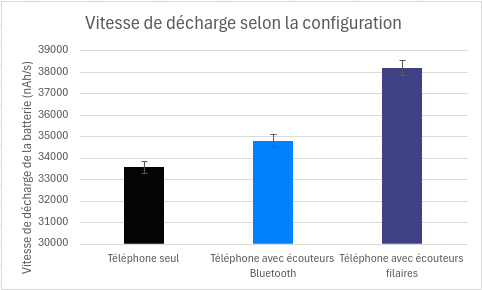
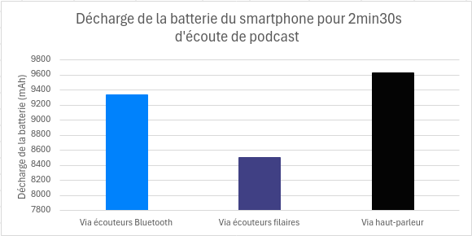
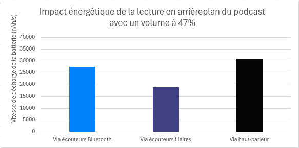
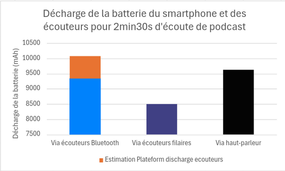
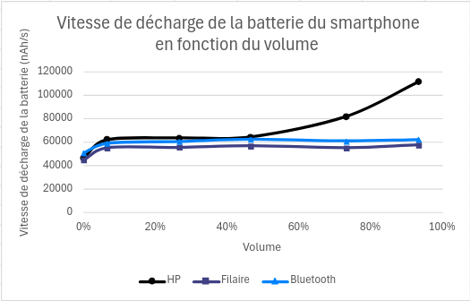
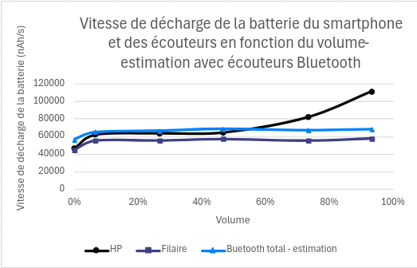

Introduction
« Les piles de mon walkman sont vides ! »
Cette phrase tellement banale dans la bouche d’un adolescent des années 90 nous paraitrait totalement saugrenue aujourd’hui.
Les technologies ont bien changé mais les problèmes restent les mêmes :
- « Il faut que je recharge mon téléphone »
- « Ne bougez pas, je dois brancher mon ordi »
- « J’espère qu’il va y avoir une prise dans le train »
C’est bien normal, l’énergie reste essentielle pour faire fonctionner nos technologies.
Sans énergie, plus de son !
Mais savez-vous quel mode d’écoute consomme le moins d’énergie pour profiter plus longtemps de vos contenus audio ?
Une consommation moindre d’énergie signifie aussi des batteries moins sollicitées dans leurs nombres de charges/décharges complètes et donc une durée de vie plus longue. Une meilleure autonomie est donc dans ce cas synonyme de moindre impact sur l’environnement.
Dans cet article, nous proposons de répondre à cette question en mesurant la consommation énergétique de 3 modes d’écoute :
- Son avec haut-parleur du téléphone
- Son avec écouteur filaire
- Son avec écouteur en Bluetooth
Méthodologie
Contexte de mesure
- Samsung Galaxy S10, Android 12
- Réseau : Wi-Fi
- Luminosité : 50 %
- Tests réalisés sur minimum 3 itérations pour fiabiliser les résultats
Écouteurs choisis
- Haut-parleur du téléphone, Galaxy S10
- Écouteurs filaires : SAMSUNG Jack 3.5 Intra-auriculaire EOIG955
- Écouteurs Bluetooth : Soundcore Life P2
Attention, la mesure de la consommation d’énergie concerne uniquement la batterie du téléphone, l’usage de la batterie des écouteurs Bluetooth ne sera pas mesuré. Le smartphone ainsi que les écouteurs sont compatibles Bluetooth 5.0.
Impact de brancher des écouteurs
Dans cette première partie, nous allons juste nous intéresser à l’impact d’avoir des écouteurs branchés sur notre téléphone, sans les utiliser.
Contexte de mesure
- Trois configurations :
- Le téléphone
- Le téléphone avec des écouteurs Bluetooth
- Le téléphone avec des écouteurs filaires
- Éléments affichés à l’écran : fond d’écran (image noire).
- Durée de mesure : 30 secondes.
Résultats

On observe ici que le fait d’avoir branché des écouteurs, en Bluetooth ou en filaire, a bien un impact sur la batterie du smartphone. Cette décharge supplémentaire est de 4 % pour les écouteurs Bluetooth et 14 % pour les filaires.
Ainsi, avec une batterie pleine sur notre Galaxy S10, de capacité 3 400 mAh, le téléphone mettra environ 28 h à se décharger complètement. Avec des écouteurs Bluetooth, on perd 1 h d’autonomie, contre presque 3h30min avec les écouteurs filaires.
Pour optimiser l’autonomie de la batterie du smartphone, il semble judicieux de débrancher les écouteurs lorsqu’ils ne sont pas utilisés.
Impact de l’écoute à puissance moyenne
Contexte de mesure
- Application : Radio France
- Podcast : cloud souverain
- Temps d’écoute : 2min30s
- Volume d’écoute : 47 % (7/15)
- Éléments affichés à l’écran : fond d’écran (image noire)
Résultats

On observe que l’écoute via des écouteurs filaires est celle qui va le moins décharger la batterie.
Gagnez 1 H 30 d’autonomie d’écoute en utilisant des écouteurs filaire plutôt que Bluetooth !
Si on reprend notre téléphone avec la batterie pleine, on pourra écouter pendant plus de 16h30min avec nos écouteurs filaires, contre 15 h avec des écouteurs Bluetooth et 14h40min avec le haut-parleur.
Si on déduit la consommation énergétique de base du terminal (sans lecture, mais avec les écouteurs branchés ou non selon le scénario) à notre consommation avec lecture, on peut estimer l’impact énergétique de la lecture en arrière-plan avec un volume moyen.

On observe donc bien les mêmes résultats : l’écoute à un volume moyen va être la plus impactante du point de vue énergétique via haut-parleur et la moins impactante via les écouteurs filaires.
Petit point sur les écouteurs Bluetooth
Les écouteurs Bluetooth utilisés ont des batteries de 55 mAh pour une durée de lecture en continu de 5 h selon le constructeur (qui varie selon le niveau de volume et le contenu). On arrive donc à une vitesse de décharge moyenne d’un peu plus de 3 000 nAh/s par écouteur. En partant du principe que cette valeur est obtenue pour un volume d’écoute moyen, on peut l’ajouter.

Les résultats changent alors, l’écoute à un volume moyen va être plus impactante via écouteurs Bluetooth du point de vue énergétique que via le haut-parleur. Attention, ces résultats ne sont qu’une estimation, basée sur des hypothèses.
Impact du volume d’écoute
Nous avons pu faire varier le volume d’écoute afin de voir l’impact de ce dernier sur la consommation d’énergie du smartphone.
Volume d’écoute testé : 0 %, 7 %, 27 %, 47 %, 73 % et 93 %

On observe qu’avec les écouteurs Bluetooth et filaires, la vitesse de décharge reste constante quel que soit le volume, tant que les écouteurs sont utilisés (soit autre que 0 %). En revanche, on observe que l’écoute avec le haut-parleur à volume maximal consomme 72 % de plus que l’écoute à volume moyen.
Nous pouvons donc vous conseiller, pour maximiser la batterie de votre smartphone, et minimiser la consommation énergétique, d’utiliser des écouteurs filaires.
Petit point sur les écouteurs Bluetooth
Si on part du principe que nos écouteurs Bluetooth consomment la même quantité d’énergie quel que soit le volume, on obtient les résultats suivants :

Ici, on observe qu’en dessous du volume moyen, l’écoute via écouteurs Bluetooth va consommer plus d’énergie que le haut-parleur. Cette tendance s’inverse avec un volume plus fort. Attention, ces résultats ne sont qu’une estimation, basée sur des hypothèses.
Conclusion
Vous savez maintenant quel est le moyen à privilégier pour vous assurer la plus grande autonomie et maximiser la durée de vie de votre batterie : avec des écouteurs filaires, débranchés lorsque l’on ne s’en sert pas.
Il n’existe aujourd’hui pas de données sur l’impact environnemental de la fabrication d’écouteurs, qu’ils soient filaires ou Bluetooth, mais nous pouvons vous conseiller de conserver ceux que vous avez le plus longtemps possible. S’ils ne fonctionnement plus et que leur réparation n’est pas possible, alors utiliser des écouteurs filaires semble être la meilleure option, avec aucune batterie et un impact énergétique plus faible sur votre batterie de smartphone.
Nous vous conseillons donc l’écoute de ces quelques podcasts (avec des écouteurs filaires bien sûr) :
- Techologie : Matérialité du numérique et externalités minières
- L’Octet Vert : Loi de Moore et la loi d’erooM !
Source :